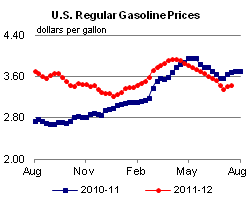
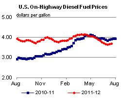
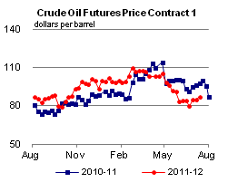
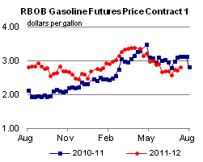
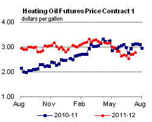
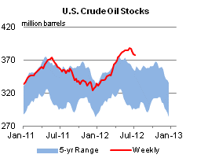
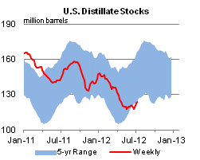
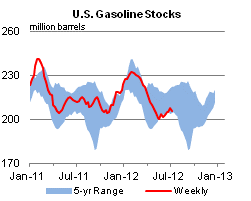
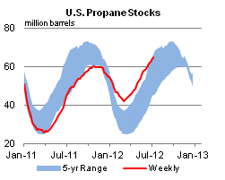

Released: July 18, 2012
Next Release: July 25, 2012
Developments in U.S. Ethanol Exports
After transitioning from a net importer of ethanol to a net exporter during 2010, the United States exported record levels of ethanol through the end of 2011 and looks to be on track to continue exporting significant volumes during 2012 (Figure 1). While U.S. ethanol production capacity remains largely unchanged from 2011, a number of other factors, both domestic and foreign, will influence the U.S. ethanol trade balance moving forward. Sluggish gasoline demand, combined with ethanol blending limits, is currently restraining domestic consumption levels. At the same time, increased Renewable Fuel Standard (RFS) mandates call for higher volumes in the fuel supply. In addition, sugarcane ethanol exported from Brazil looks to rebound from a low year in 2011 and compete with U.S. corn ethanol in the world market. These conflicting factors create some uncertainty and will make it harder for U.S. ethanol exports to reach 2011 levels, but ultimately U.S. export volumes should still be significant and should remain the world leader in 2012.
{kind=link}
During 2011, the United States exported a total of approximately 1.2 billion gallons of ethanol, compared to almost 400 million gallons in 2010. Brazil was the largest recipient of U.S. ethanol in 2011, importing 400 million gallons compared to approximately 20 million gallons in 2010; significant volumes of ethanol were also sent to Canada, Europe, and the United Arab Emirates. Through April 2012, U.S. ethanol exports have fallen from second half 2011 levels, but are still significant at over 300 million gallons, while imports remain low at less than 30 million gallons with the majority coming from Brazil.
The largest factor driving the ramp up in U.S. ethanol exports has been the combination of increased ethanol production capacity in the United States with constraints limiting the ability of the United States to blend ethanol beyond 10 percent by volume of gasoline (E10), also known as the ethanol blend wall. In the absence of higher levels of ethanol blending, such as E15 or E85, ethanol production has increased beyond the capacity to blend additional volumes into the domestic gasoline pool. Thus, export markets create an outlet for the majority of these marginal ethanol volumes. Working in the opposite direction, one factor that might be slowing ethanol production compared to last year has been the expiration of the Volumetric Ethanol Excise Tax Credit (VEETC) of $0.45 per gallon, also known as the blender's tax credit. This has reduced profit margins for domestic ethanol producers and potentially impacted export volumes in the early part of 2012.
The ethanol blend wall situation is not likely to change in the short term. Recent reductions in gasoline demand as a result of high prices, the economic downturn, and greater efficiency standards have already reduced the pool of gasoline available to blend with ethanol; this pool could be again reduced if gasoline demand falls further. While the EPA has approved a number of producers to sell an E15 blend for vehicles manufactured after 2000 (model years 2001 and after), a number of issues are likely to limit its consumption in significant volumes in the near term. Representatives from the oil and automotive industries have cited issues with fuel specifications and voided automobile warranties, while parties from the retail side have been concerned with liability issues as well as potentially higher infrastructure costs as a result of offering E15. These issues, combined with unknown consumer acceptability and an already constrained ethanol distribution network, are likely to limit E15 consumption to low volumes concentrated around ethanol production facilities in 2012.
The increased mandates of the Renewable Fuel Standard further complicate the U.S. ethanol trade situation in 2012 and beyond. The RFS mandates that 15.2 billion gallons of renewable fuels be consumed in 2012, of which 13.2 billion gallons can be met by corn-derived ethanol, up from 12.6 billion gallons in 2011. In addition, the Advanced Biofuel mandate, for which imported sugarcane ethanol along with biomass-based biodiesel qualifies, increases from 1.35 billion gallons in 2011 to 2.0 billion gallons in 2012. Domestically produced biodiesel met the majority of the mandate in 2011 with biodiesel production reaching almost 1.0 billion gallons, for which biodiesel receives 1.5 credits per gallon introduced to the market, resulting in almost 1.5 billion gallons of RFS credits. Assuming the same record levels of biodiesel production as 2011 for 2012, the increase in the Advanced Biofuels mandate to 2 billion gallons leaves approximately 500 million gallons of renewable fuels that are to be met by either imported sugarcane ethanol or biodiesel.
The interaction between the different fuels and mandates in the RFS looks to be on track to creating an ethanol swap between the United States and Brazil in 2012. In this scenario, the United States sends Brazil volumes of corn ethanol in exchange for Brazilian sugarcane ethanol, which draws a higher price in the United States thanks to the RFS Advanced Biofuel mandate as well as the at least temporarily re-instated California Low Carbon Fuel Standard program. This dynamic results in a complex environment where RFS-regulated parties and ethanol producers not only have to produce enough corn ethanol to meet the overall Renewable Fuels mandate, but likely must also import significant volumes of sugarcane ethanol to meet the Advanced Biofuel mandate, all in the face of demand constraints by way of the ethanol blend wall.
Ethanol production reached approximately 14 billion gallons in 2011, and after accounting for 1.2 billion gallons of exports, implied approximately 12.9 billion gallons were consumed domestically in 2011. Assuming similar levels of consumption in 2012 due to the blend wall, this means somewhere between 0 and 500 million gallons of imported sugarcane ethanol, depending on biodiesel production, will comprise that 12.9 billion gallon total. In the absence of E15 or E85, this could lead to either reduced levels of domestic corn ethanol production and thus exports, or market conditions that encourage increased exports to both Brazil and other world markets as Brazilian sugarcane ethanol is exported primarily to the United States, which remains the major ethanol supplier to the rest of the world. In either scenario, it is possible that the 2012 RFS mandate of 15.2 billion gallons will not be met and banked credits from previous years will be used for compliance
While there are a number of complexities and potential renewable fuel mixes in store for the United States in 2012, it is likely to be a net exporter of ethanol, albeit at lower levels than in 2011. The trade balance is likely to be directly tied to Brazil in 2012 as a result of the Renewable Fuel Standard, with gasoline demand, E15 adoption, and even the biodiesel market influencing the total volumes.
Gasoline and diesel fuel prices both increase again
The U.S. average retail price of regular gasoline increased two cents this week to $3.43 per gallon, 26 cents per gallon lower than last year at this time. The price decreased in the Midwest and Rocky Mountain regions to $3.42 per gallon and $3.51 per gallon, down two and four cents from last week, respectively. The price increased in all other regions. On the East Coast, the average gasoline price increased five cents to $3.41 per gallon. The Gulf Coast price is up four cents to $3.20 per gallon. Rounding out the regions, the West Coast price increased less than a penny to remain at $3.67 per gallon.
The national average diesel fuel price increased a penny to $3.70 per gallon, 23 cents per gallon lower than last year at this time. Prices increased in all regions of the Nation except the Rocky Mountains, where the price decreased one cent to $3.67 per gallon. The largest increase was in the Midwest, where the price increased two cents to $3.66 per gallon. On the East and Gulf Coasts the price increased one cent to $3.74 per gallon and $3.62 per gallon, respectively. The West Coast price increased a fraction of a penny to remain at $3.80 per gallon.
Propane inventories show another strong build
Total U.S. inventories of propane grew by 1.6 million barrels last week to end at 64.7 million barrels, 39 percent higher than the same week last year. The East Coast and Gulf Coast regions each added 0.5 million barrels of propane stocks, while the Midwest and Rocky Mountain/West Coast regions grew by 0.4 and 0.1 million barrels, respectively. Propylene non-fuel-use inventories represented 6.8 percent of total propane inventories.
Text from the previous editions of This Week In Petroleum is accessible through a link at the top right-hand corner of this page.
|  |  | ||||||
| Retail Data | Change From Last | Retail Data | Change From Last | ||||
| 07/16/12 | Week | Year | 07/16/12 | Week | Year | ||
| Gasoline | 3.427 | Diesel Fuel | 3.695 | ||||
|  |  | ||||||||||||||||||||||||||
|
 | ||||||||||||||||||||||||||
| *Note: Crude Oil Price in Dollars per Barrel. | |||||||||||||||||||||||||||
|  |  | ||||||
|  |  | ||||||
| Stocks Data | Change From Last | Stocks Data | Change From Last | ||||
| 07/13/12 | Week | Year | 07/13/12 | Week | Year | ||
| Crude Oil | 377.4 | Distillate | 123.5 | ||||
| Gasoline | 205.9 | Propane | 64.745 | ||||